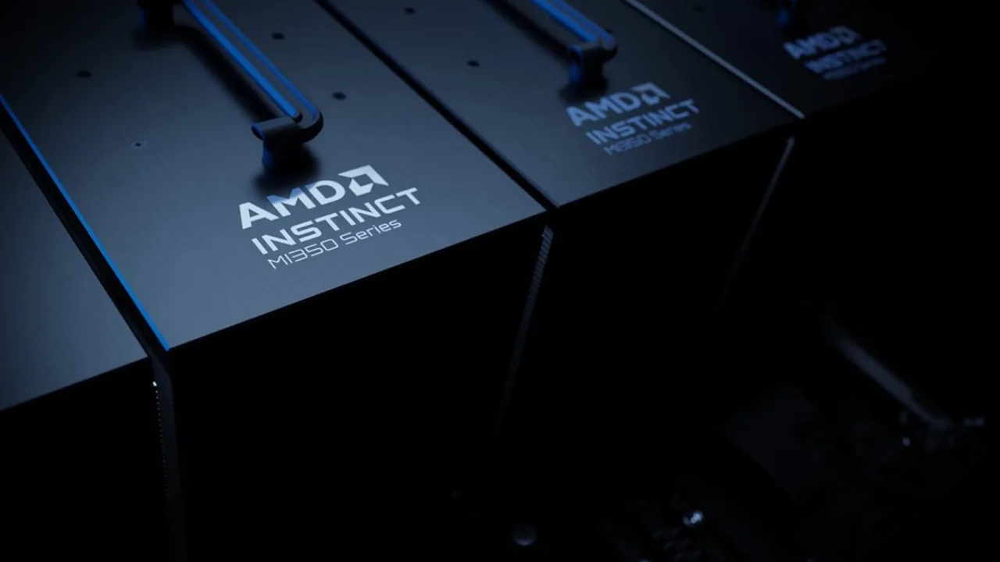

AMD 주주가 지금 가장 궁금해할 질문은 “엔비디아를 언제 따라잡느냐”보다 조금 더 현실적입니다. MI350과 MI450 같은 이름이 시장의 기대를 만들고 있지만, 실제 주가를 오래 지탱하는 것은 제품 발표가 아니라 데이터센터 매출이 높은 마진과 반복 주문으로 바뀌는 속도입니다. AMD는 이제 AI 인프라 예산 안에 들어온 회사가 맞지만, 그 예산 안에서 얼마나 좋은 조건으로 자리를 넓히는지는 아직 계속 확인해야 합니다.
2026년 1분기 AMD의 전체 매출은 102억5,300만달러였고, Data Center 부문 매출은 58억달러로 전년 대비 57% 증가했습니다. 회사는 이 성장을 EPYC 프로세서 수요와 AMD Instinct GPU 출하 증가로 설명했습니다. 숫자만 보면 이미 방향은 뚜렷합니다. 다만 투자자는 여기서 한 번 더 물어야 합니다. 이 성장이 낮은 가격으로 고객을 확보한 결과인지, 아니면 AMD가 AI 데이터센터 안에서 계속 가격을 지킬 수 있는 구조인지가 더 중요합니다.
AMD는 서버 CPU에서는 EPYC로 신뢰를 쌓았고, GPU에서는 Instinct로 기회를 넓히고 있습니다. 이 조합은 단순한 반도체 한 개의 경쟁이 아닙니다. 클라우드 고객은 서버, 가속기, 네트워킹, 소프트웨어, 전력, 냉각 비용을 한꺼번에 계산합니다. 그래서 AMD를 읽을 때는 GPU 성능표만 보는 것보다 CPU와 GPU가 같은 고객 안에서 같이 팔리는지를 보는 편이 훨씬 실전적입니다.
데이터센터 숫자는 이미 커졌습니다

AMD의 2026년 1분기 실적에서 가장 먼저 볼 숫자는 Data Center 부문입니다. 이 부문 매출 58억달러는 전체 매출의 절반을 넘는 규모이고, 전년 대비 57% 성장했습니다. 과거 AMD를 PC CPU나 게임 콘솔 반도체 회사로만 봤던 관점에서는 이미 회사의 무게중심이 바뀌었다고 볼 수 있습니다. 이제 AMD는 경기 민감한 PC 회복주가 아니라 AI 데이터센터 자본지출을 함께 타는 반도체 플랫폼 회사에 가까워지고 있습니다.
하지만 데이터센터 매출이 커졌다는 사실만으로 충분하지는 않습니다. 같은 분기 non-GAAP 매출총이익률은 55%였고, 2026년 2분기 회사 전망은 매출 112억달러 안팎과 non-GAAP 매출총이익률 약 56%입니다. 투자자는 이 마진이 유지되는지를 계속 봐야 합니다. AI GPU는 초기 고객 확보 과정에서 가격, 지원 인력, HBM과 패키징 비용이 함께 움직입니다. 매출이 늘어도 마진이 같이 올라가지 않으면 시장은 “성장”보다 “추격 비용”을 먼저 보기 시작합니다.
AMD의 좋은 점은 EPYC CPU와 Instinct GPU가 같은 데이터센터 예산 안에 놓인다는 점입니다. EPYC는 이미 서버 시장에서 검증된 제품군이고, Instinct는 AI 가속기 예산을 노립니다. 고객 입장에서는 GPU만 바꾸는 것이 아니라 서버 전체 비용, 전력 효율, 소프트웨어 이전 비용을 함께 따집니다. AMD가 이 계산에서 “싸서 쓰는 대안”이 아니라 “운영비를 낮추는 표준 선택지”가 되면 데이터센터 매출의 질은 훨씬 좋아집니다.
MI350은 출하보다 신뢰가 먼저입니다
관련 영상
AMD와 엔비디아 AI GPU 경쟁을 설명하는 한국어 롱폼 영상
AMD 공식 MI350 제품 페이지는 MI350 시리즈가 생성형 AI, 고속 추론, 학습, HPC 워크로드를 겨냥하며 최대 288GB HBM3E 메모리와 최대 8TB/s 피크 이론상 메모리 대역폭을 제공한다고 설명합니다. 스펙은 투자자의 관심을 끌기에 충분합니다. 특히 대형 언어모델 추론에서는 메모리 용량과 대역폭이 비용을 크게 바꿀 수 있습니다. 다만 고객이 실제로 바꾸려면 스펙표보다 더 까다로운 검증을 통과해야 합니다.
AI 데이터센터에서는 소프트웨어가 하드웨어만큼 중요합니다. 엔비디아의 힘은 GPU 성능만이 아니라 CUDA, 라이브러리, 개발자 경험, 운영 도구, 문제 해결 사례가 오래 쌓였다는 점에서 나옵니다. AMD가 ROCm을 통해 이 장벽을 낮추고 있지만, 고객은 모델 학습과 추론을 멈추지 않고 옮길 수 있는지를 봅니다. 성능이 좋아도 개발팀이 많은 시간을 써야 하면 총비용은 쉽게 낮아지지 않습니다.
그래서 MI350의 핵심은 “몇 장을 출하했느냐”에서 끝나지 않습니다. 중요한 것은 고객이 같은 환경에서 다음 세대인 MI450과 Helios까지 이어갈 의사가 있는지입니다. 고객이 한 번 시험 물량을 넣는 것과 랙 단위 인프라 표준으로 삼는 것은 완전히 다릅니다. AMD가 진짜로 평가를 바꾸려면 실제 운영 사례, 장애 대응, 소프트웨어 업데이트, 파트너 서버 생태계가 함께 좋아져야 합니다.
대형 고객 발표는 약속의 질을 봐야 합니다
AMD는 Meta와 최대 6GW 규모 AMD Instinct GPU 배치 계획을 발표했고, 첫 1GW는 MI450 기반 맞춤 GPU로 전력을 공급할 계획이라고 밝혔습니다. NAVER Cloud와의 협력에서는 EPYC 프로세서 확대, MI455X GPU 초기 접근, ROCm 소프트웨어 최적화가 함께 언급되었습니다. 이런 발표는 AMD가 단순 실험 공급사가 아니라 대형 고객의 로드맵 안에 들어가고 있다는 신호입니다.
하지만 대형 고객 뉴스는 언제나 두 겹으로 읽어야 합니다. 첫 번째 겹은 수요 가시성입니다. 고객 이름이 분명하고 규모가 클수록 공급망 준비와 투자 계획을 세우기 쉽습니다. 두 번째 겹은 협상력입니다. 고객이 클수록 가격, 맞춤 사양, 지원 조건, 납기 조건을 더 강하게 요구할 수 있습니다. AMD가 고객을 확보하면서도 매출총이익률을 지킨다면 좋은 계약이고, 매출만 키우고 마진을 내준다면 덜 좋은 계약입니다.
마이크로소프트, 메타, 오라클, 네이버클라우드 같은 대형 고객은 AI 인프라에서 엔비디아 의존도를 낮추고 싶어 합니다. 이 수요는 AMD에 기회입니다. 다만 고객 입장에서는 AMD만 대안이 아닙니다. 브로드컴 같은 맞춤형 반도체, 자체 AI 칩, 기존 엔비디아 플랫폼 증설도 모두 선택지입니다. AMD가 이 경쟁에서 살아남으려면 “저렴한 두 번째 공급처”를 넘어 “운영 가능한 두 번째 표준”이 되어야 합니다.
공급망은 성장의 천장입니다
AMD는 팹리스 기업입니다. 설계 역량이 강해도 실제 생산은 TSMC와 고급 패키징, HBM 공급망에 크게 의존합니다. AMD의 10-Q 리스크 요인도 TSMC가 7나노미터 이하 제품 웨이퍼를 충분히 생산하지 못하거나 선단 공정 전환, 수율, 납기에 문제가 생기면 사업에 중대한 악영향이 있을 수 있다고 설명합니다. AI GPU가 커질수록 이 리스크는 더 중요해집니다.
Instinct GPU는 단순 칩 하나가 아니라 HBM, 패키징, 기판, 네트워킹, 서버 통합, 전력과 냉각까지 묶여야 합니다. 수요가 강해도 공급망이 따라오지 못하면 매출 인식이 늦어지고, 고객 일정도 흔들립니다. 반대로 AMD가 좋은 조건으로 HBM과 패키징 물량을 확보하고 고객 납기를 지키면 시장은 AMD를 더 안정적인 AI 인프라 공급자로 보기 시작합니다.
투자자가 앞으로 확인할 지점은 네 가지입니다. Data Center 매출이 계속 고성장하는지, non-GAAP 매출총이익률이 55~56% 이상으로 유지되는지, MI350과 MI450 고객이 발표에서 실제 매출로 넘어오는지, ROCm과 서버 파트너 생태계가 고객의 전환 비용을 낮추는지입니다. AMD 주식의 다음 평가는 “엔비디아를 이긴다”는 문장보다 이 네 가지 숫자와 증거에서 나올 가능성이 큽니다.